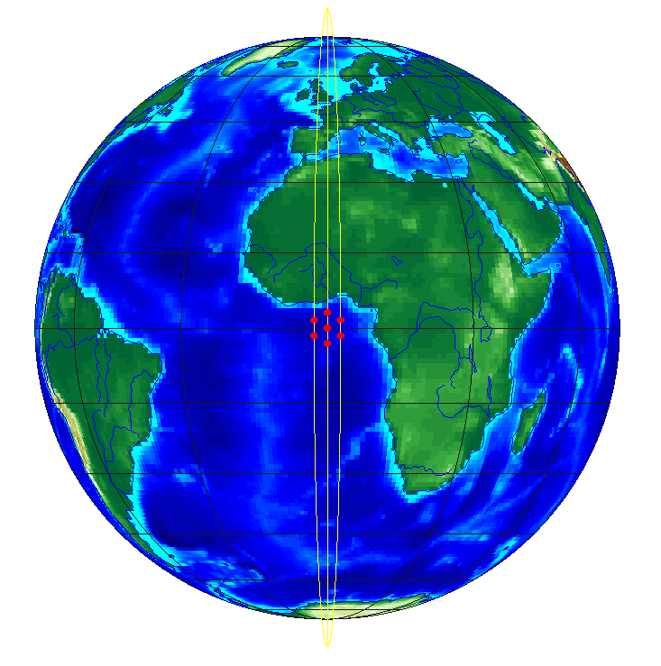
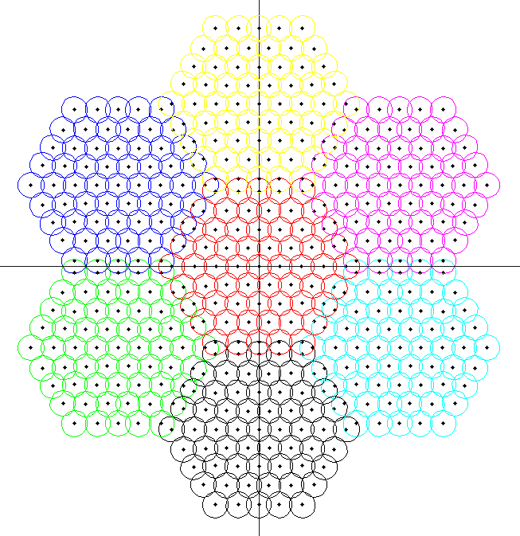
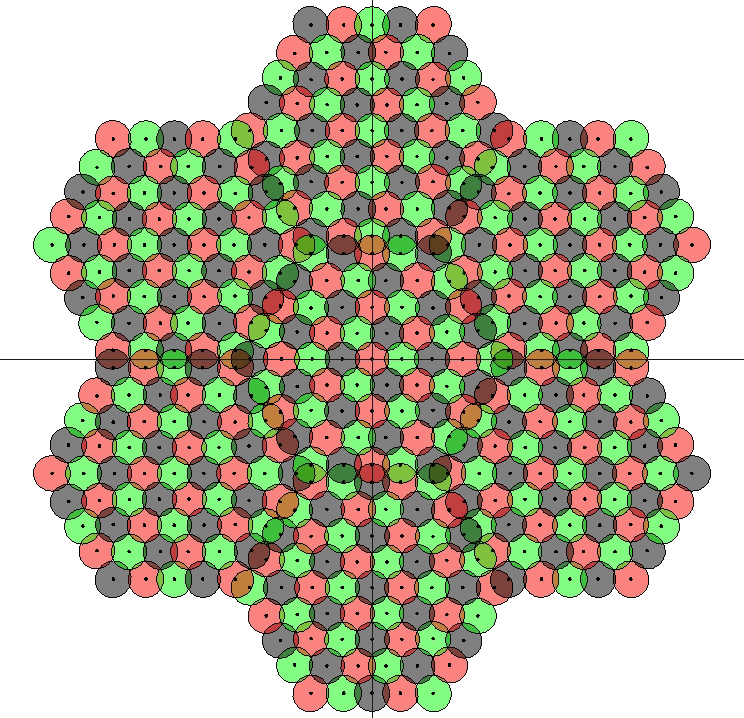
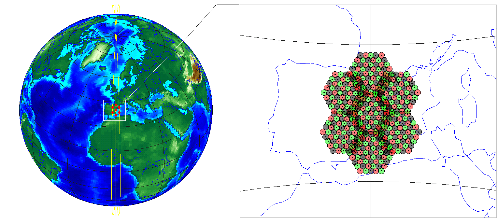

来源：ZTE，R1-1912610，System simulation results and link budget for NTN，RAN1 #99，2019 年 11 月。网页依据 §4 与附录 A 的区域七星模型制作。这里的 7 星是参与该区域评估的卫星样本；3 个轨道面也属于区域模型。
1. 提案直接给出的参数
| 参数 | M10 | M15 |
|---|
| 轨道高度 h | 600 km | 1,200 km |
| 轨道倾角 / 区域卫星数 | 90° / [2, 3, 2] |
| 同轨间距 Δsat | 2.7680° | 5.5549° |
| 轨道经度差 Δorbit | 2.3971° | 4.8107° |
| 邻轨错位 γsat | 1.3840° | 2.7774° |
| 波束数与复用 | 61 / 星，Nc = 5，Option 2（FRF = 3，Frequency Reuse Factor，频率复用因子） |
2. 三个角度如何由覆盖反推
提案先求单星半覆盖地心角 Δ½，再形成交错布局。HPBW（Half-Power Beamwidth，半功率波束宽度）在公式中以弧度代入；本页 S 波段 Set 1 波束宽度采用 4.41°。
θs = (Nc − 1)/2 · [HPBW + acos(1 − HPBW²/8)] + HPBW/4 （Nc 为奇数）
El = acos[(Re + h)/Re · sin θs]
Δ½ = π/2 − θs − El
Δsat = 2Δ½，Δorbit = 3Δ½ / [2cos(π/6)]，γsat = Δ½
网页使用附录 A 的角度表值。用四舍五入后的 HPBW = 4.41° 重算，M10 的 Δsat 约为 2.7662°；因此不使用重算值覆盖原表的 2.7680°。
分步模式还提供等价的角坐标三角形：横边为 √3Δ½，竖边为 Δ½，斜边为 2Δ½，因而理想交错角为 π/6 = 30°。图中经度与沿轨相位采用相同的绘图比例，用来解释邻轨间距和半格错位之间的几何关系。
3. 从轨道到 UV 再到地球
极轨卫星位置写成 s = (Re+h)[cosλ cosφ, sinλ cosφ, sinφ]。λ 为轨道面在赤道附近的经度，φ 为沿极轨的相位。三条轨道的 λ = [−Δorbit, 0, +Δorbit]；中间轨道取相位 [−Δsat, 0, +Δsat]，左右轨道各取 [−γsat, +γsat]。
每颗卫星都有自己的局部 UV 方向余弦坐标。令 n 指向星下点、e 指向东、p 指向北，则射线 d = u·e + v·p + √(1−u²−v²)·n。射线 s+td 与半径 Re 的球面求交，得到该波束的地面位置。u、v 无量纲；UV 平面不等于地面平面。
为了连续演示，本页补充采用固定朝向星下点的局部坐标、UV 上 4 圈加中心的六边形网格（共 61 束），半径 r = sin(HPBW/2)，中心距 √3r。波束轮廓在 UV 上画圆，再通过射线求球面交点；这是对原理的几何实现。它保留提案的七星布局、束数与三频复用，不声称逐点复现原图坐标。邻星的频率标签循环错开；具体着色是一种演示方案。
4. 地球底图与视图
大陆轮廓采用 Natural Earth 1:110m land 公共领域数据。海陆配色、昼夜明暗和大气光晕用于表现立体感，光照不表示该场景某个实际日期的太阳位置。
“局部 / 全球”只改变相机。轨道纬度滑块共同推进七颗卫星，固定其相对轨道相位；使用球形地球与圆形极轨，省略地球自转和轨道摄动。高纬度视图反映轨道汇聚导致的覆盖重叠。
本页展示几何与复用机制。提案 Figure 5 的 CL（Coupling Loss，耦合损耗）与 GF（Geometry Factor，几何因子）统计曲线未在此计算；图中的可见同频束也不能直接换算成 CIR。

原文 Figure 3 · 轨道与卫星
原文 Figure 4(b) · 七星波束
原文 Figure 4(c) · 频率复用
原文 Figure 6 · 高纬重叠地球底图：Natural Earth 公共领域数据 ↗
3GPP 原始提案归档 ↗